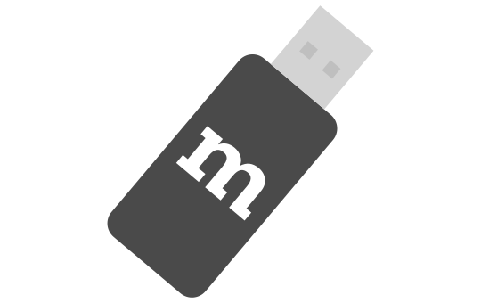

Get your hands on a Raspberry Pi® single board computer. The latest Raspberry Pi 3 has WiFi and Bluetooth support built in, as well as access to GPIO ports for direct hardware connections. This is not essential as you can use alternative developer boards, or even your laptop or desktop computer, but it will currently provide the best experience.
To use your Web of Things gateway with other wireless protocols like ZigBee and Z-Wave you will need USB dongles. So far the gateway supports the Digi XStick (ZB mesh version) for ZigBee and the Aeotec Z-Stick (Gen5) for Z-Wave. Other Z-Wave dongles like UZB which use the Sigma Designs serial API are also likely to work out of the box.

Download the pre-built Raspberry Pi OS image from Mozilla and flash it onto an SD card. Please note that this is experimental pre-release software and at this prototype stage is not ready for production use. It is intended as an early preview for hackers, makers and web developers to get their hands on with the Web of Things.
Download
(Alternatively, if you'd prefer to just try out the software on your PC you can follow the instructions on GitHub to checkout the code and build it yourself.)
Once you have successfully flashed the OS onto an SD card you can insert it into your Raspberry Pi and follow the Getting Started Guide below: